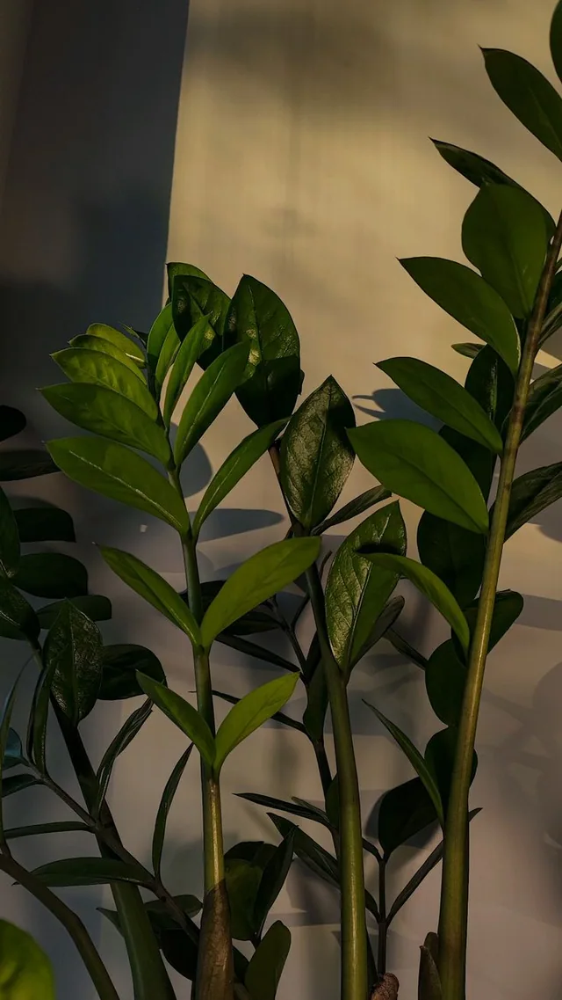

Zamioculcas zamiifolia
Замиокулькас
Графичные ветви и плотные листья. Хороший первый шаг в домашнее озеленение.
↕ 40–55 см◌ Горшок 14 см✳ Простой уход
2 490 ₽
Демонстрационная цена. Декоративное кашпо не входит в комплект.
К характеристикам ↓